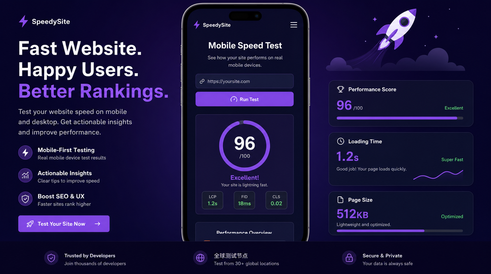

Designed on phones first. Loads in under 2 seconds. Google loves it, your customers will too.

What this includes
• Layout designed for phones first, then scaled up for tablets and desktops
• Target load time under 2 seconds on mobile networks
• Optimized images, clean code, no bloat - fast by default
• Tap-friendly buttons, readable text sizes, thumb-zone navigation
• Passes Google Core Web Vitals - a real ranking factor for local search
Speed isn't just a nice-to-have. Google uses page speed as a ranking signal. A fast mobile site means more visibility, more visitors, and more customers finding you instead of your competitors.